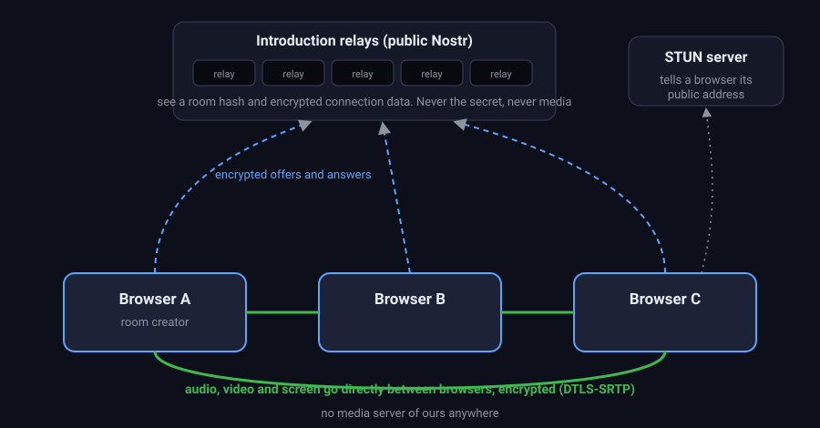
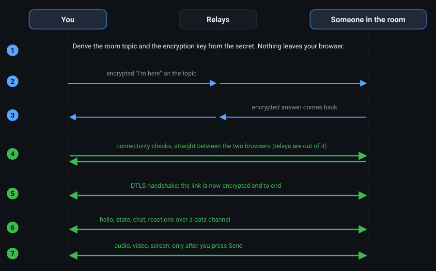
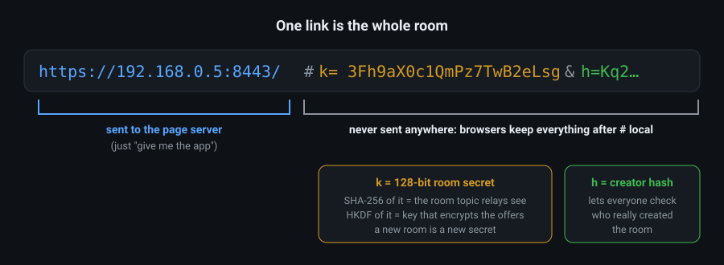

A video room you open with a link
Audio, video and screen share between people, directly from browser to browser. No account to make, and no media server of ours: your call is not routed through us, because there is nothing of ours to route it through.
How a call is made
Browsers cannot find each other on their own. To introduce them, the app uses public Nostr relays as a message board and, optionally, a STUN server to learn each browser's public address. After that, everything goes directly between the browsers.


The invite link is the whole room
There is no room list, no room name and no account. A room is a random secret inside a link. Share the link and people are in; make a new link and it is a different room.

# stays in your browser. The relays only ever see a hash derived from the secret.A room exists only while someone is in it. When the last person leaves, nothing remains anywhere. Anyone who opens the link later simply starts a fresh, empty room.
What each party can see

Every host the page is set to contact
| Purpose | Host |
|---|---|
| The page and its libraries | the origin you loaded it from |
| Introduction relays | no.str.cr, relay.wavlake.com, nostr.hifish.org, relay.notoshi.win, relay.dwadziesciajeden.pl |
| STUN (finding your public address) | stun.cloudflare.com:3478. Off with "LAN only". |
| TURN (relaying media) | none built in. Only a server you add yourself. |
Inside the app, /egress shows this list next to the hosts the page has actually been seen using, and flags any difference. The relays are public and run by volunteers. The app tests them every minute and says so when they stop passing messages, rather than showing an empty room.
Why rooms stay small
With no server in the middle, every person sends their own video separately to every other person. The work grows quickly with each addition, so rooms stay small. Larger rooms need a server that holds media, which is a different product.

Connecting on the same network
Browsers hide a device's local address behind a random .local name for privacy. Other devices on the same Wi-Fi often cannot resolve that name, and the fallback needs the router to loop traffic back, which most do not.

.local name was, so same-network devices can connect directly. With the local server this works from the start; on a static host (including the live site) it takes effect once you turn on Mic or Camera and allow it, because that is when the browser reveals the address. This has not yet been confirmed on real phones. It can be turned off in Network settings. If a router blocks devices from reaching each other (guest Wi-Fi, client isolation), nothing in the page can fix that; add your own TURN server.In a room
Roster you can trust
Everyone who can receive your media is listed with what they receive. A check reads the rendered roster back and flags anyone missing.
Media off until you say
Camera and microphone start with a private preview. Nobody receives anything until you press Send.
Loud failures
If two people cannot connect, the roster names the reason and what each side offered. Dead relays are reported, not mistaken for an empty room.
Chat and reactions
Messages to everyone or one person, a raised hand, and quick reactions. Chat lives in memory only.
Devices and layout
Pick or switch camera, microphone and speaker. See who is speaking, pin a tile, go full screen, or use the speaker layout.
Screen share
Share a screen alongside your camera. Quality is adjusted for the camera and the screen, and the page tells you what is being sent to whom.
Recording, and who can do it
Only the person who created the room gets a Record button. The invite carries a hash of a key that the creator's browser made when the room was created, and the creator proves it to each person by signing a challenge. Everyone else is told, in their own window, as soon as a recording starts, and again if they join mid-recording.
Removing someone
There is no host with powers. "Ask everyone to disconnect X" asks each person, who can agree or ignore, and the person asked can simply reconnect; the roster shows it when they do. Move room (a new secret, with only chosen people invited over the encrypted connection) is the only real removal.
What it is not
- Not for big rooms. A few people, with the limits above.
- Not "serverless". Introductions go through third-party relays, and a STUN server is used unless you turn it off.
- Not anonymous. People in the room see your IP address. Display names are self-asserted and shown as unverified.
- Not a hosted service. No waiting room, no lock, no cloud recording, no history. Chat is not kept and late joiners do not see earlier messages.
- Not private from the page host's code. The host serves the page, so it could serve a different one. The libraries are pinned by SHA-256 and the page refuses to run if they change.
Part of a family
rtc webCLI belongs to the webCLI family of browser tools that process your content on your device and say exactly what they fetch and send. This one cannot be zero-egress, because a call has to send, so it declares every destination instead. Architecture paper: arXiv:2608.28950. Source and full details: github.com/tejaswigowda/rtc-webCLI.